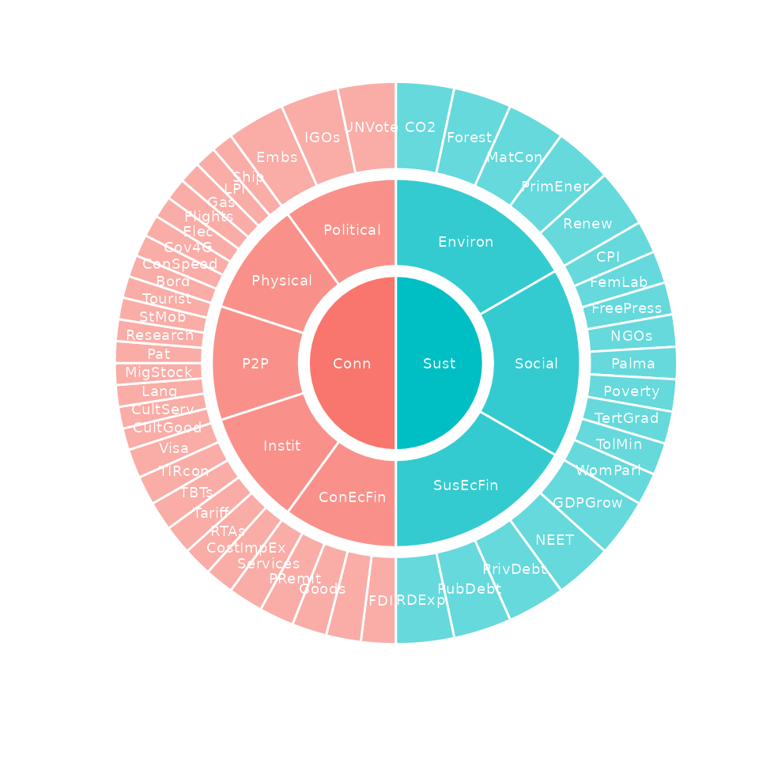

Weights are used by most aggregation methods to optionally alter the contribution of each indicator in an aggregation group, as well as by aggregates themselves if they are further aggregated. Weighting is therefore part of aggregation, but this vignette deals with it separately because there are a few special tools for weighting in COINr.
First, let’s see what weights look like in practice. When a coin is
built using new_coin(), the iMeta data frame
(an input to new_coin()) has a “Weight” column, which is
also required. Therefore, every coin should have a set of weights in it
by default, which you had to specify as part of its construction. Sets
of weights are stored in the .$Meta$Weights sub-list. Each
set of weights is stored as a data frame with a name. The set of weights
created when calling new_coin() is called “Original”. We
can see this by building the example coin and accessing the “Original”
set directly:
library(COINr)
# build example coin
coin <- build_example_coin(up_to = "Normalise", quietly = TRUE)
# view weights
head(coin$Meta$Weights$Original)
#> iCode Level Weight
#> 9 Goods 1 1
#> 10 Services 1 1
#> 11 FDI 1 1
#> 12 PRemit 1 1
#> 13 ForPort 1 1
#> 31 Renew 1 1The weight set simply has the indicator code, Level, and the weight itself. Notice that the indicator codes also include aggregate codes, up to the index:
# view rows not in level 1
coin$Meta$Weights$Original[coin$Meta$Weights$Original$Level != 1, ]
#> iCode Level Weight
#> 50 Physical 2 1
#> 51 ConEcFin 2 1
#> 52 Political 2 1
#> 53 Instit 2 1
#> 54 P2P 2 1
#> 55 Environ 2 1
#> 56 Social 2 1
#> 57 SusEcFin 2 1
#> 58 Conn 3 1
#> 59 Sust 3 1
#> 60 Index 4 1And that the index itself doesn’t have a weight because it is not used in an aggregation. Notice also that weights can be specified relative to one another. When an aggregation group is aggregated, the weights within that group are first scaled to sum to 1. This means that weights are relative within groups, but not between groups.
Manual re-weighting
To change weights, one way is to simply go back to the original
iMeta data frame that you used to build the coin, and edit
it. If you don’t want to do that, you can also create a new weight set.
This simply involves:
- Making a copy of the existing set of weights
- Changing the weights of the copy
- Putting the new set of weights in the coin
For example, if we want to change the weighting of the “Conn” and “Sust” sub-indices, we could do this:
# copy original weights
w1 <- coin$Meta$Weights$Original
# modify weights of Conn and Sust to 0.3 and 0.7 respectively
w1$Weight[w1$iCode == "Conn"] <- 0.3
w1$Weight[w1$iCode == "Sust"] <- 0.7
# put weight set back with new name
coin$Meta$Weights$MyFavouriteWeights <- w1Now, to actually use these weights in aggregation, we have to direct
the Aggregate() function to find them. When weights are
stored in the “Weights” sub-list as we have done here, this is easy
because we only have to pass the name of the weights to
Aggregate():
coin <- Aggregate(coin, dset = "Normalised", w = "MyFavouriteWeights")
#> Written data set to .$Data$AggregatedAlternatively, we can pass the data frame itself to
Aggregate() if we don’t want to store it in the coin for
some reason:
coin <- Aggregate(coin, dset = "Normalised", w = w1)
#> Written data set to .$Data$Aggregated
#> (overwritten existing data set)When altering weights we may wish to compare the outcomes of alternative sets of weights. See the Adjustments and comparisons vignette for details on how to do this.
Effective weights
COINr has some statistical tools for adjusting weights as explained in the next sections. Before that, it is also interesting to look at “effective weights”. At the index level, the weighting of an indicator is not due just to its own weight, but also to the weights of each aggregation that it is involved in, plus the number of indicators/aggregates in each group. This means that the final weighting, at the index level, of each indicator, is slightly complex to understand. COINr has a built in function to get these “effective weights”:
w_eff <- get_eff_weights(coin, out2 = "df")
head(w_eff)
#> iCode Level Weight EffWeight
#> 9 Goods 1 1 0.02000000
#> 10 Services 1 1 0.02000000
#> 11 FDI 1 1 0.02000000
#> 12 PRemit 1 1 0.02000000
#> 13 ForPort 1 1 0.02000000
#> 31 Renew 1 1 0.03333333The “EffWeight” column is the effective weight of each component at the highest level of aggregation (the index). These weights sum to 1 for each level:
# get sum of effective weights for each level
tapply(w_eff$EffWeight, w_eff$Level, sum)
#> 1 2 3 4
#> 1 1 1 1The effective weights can also be viewed using the
plot_framework() function, where the angle of each
indicator/aggregate is proportional to its effective weight:
plot_framework(coin)
PCA weights
The get_PCA() function can be used to return a set of
weights which maximises the explained variance within aggregation
groups. This function is already discussed in the Analysis vignette, so we will only focus on the
weighting aspect here.
First of all, PCA weights come with a number of caveats which need to
be mentioned (this is also detailed in the get_PCA()
function help). First, what constitutes “PCA weights” in composite
indicators is not very well-defined. In COINr, a simple option is
adopted. That is, the loadings of the first principal component are
taken as the weights. The logic here is that these loadings should
maximise the explained variance - the implication being that if we use
these as weights in an aggregation, we should maximise the explained
variance and hence the information passed from the indicators to the
aggregate value. This is a nice property in a composite indicator, where
one of the aims is to represent many indicators by single composite. See
here for a
discussion on this.
But. The weights that result from PCA have a number of downsides. First, they can often include negative weights which can be hard to justify. Also PCA may arbitrarily flip the axes (since from a variance point of view the direction is not important). In the quest for maximum variance, PCA will also weight the strongest-correlating indicators the highest, which means that other indicators may be neglected. In short, it often results in a very unbalanced set of weights. Moreover, PCA can only be performed on one level at a time.
The result is that PCA weights should be used carefully. All that
said, let’s see how to get PCA weights. We simply run the
get_PCA() function with out2 = "coin" and
specifying the name of the weights to use. Here, we will calculate PCA
weights at level 2, i.e. at the first level of aggregation. To do this,
we need to use the “Aggregated” data set because the PCA needs to have
the level 2 scores to work with:
coin <- get_PCA(coin, dset = "Aggregated", Level = 2,
weights_to = "PCAwtsLev2", out2 = "coin")
#> Weights written to .$Meta$Weights$PCAwtsLev2This stores the new set of weights in the Weights sub-list, with the name we gave it. Let’s have a look at the resulting weights. The only weights that have changed are at level 2, so we look at those:
coin$Meta$Weights$PCAwtsLev2[coin$Meta$Weights$PCAwtsLev2$Level == 2, ]
#> iCode Level Weight
#> 50 Physical 2 0.5117970
#> 51 ConEcFin 2 0.3049926
#> 52 Political 2 0.3547671
#> 53 Instit 2 0.5081540
#> 54 P2P 2 0.5108455
#> 55 Environ 2 0.6513188
#> 56 Social 2 -0.7443677
#> 57 SusEcFin 2 0.1473108This shows the nature of PCA weights: actually in this case it is not
too severe but the Social dimension is negatively weighted because it is
negatively correlated with the other components in its group. In any
case, the weights can sometimes be “strange” to look at and that may or
may not be a problem. As explained above, to actually use these weights
we can call them when calling Aggregate().
Optimised weights
While PCA is based on linear algebra, another way to statistically weight indicators is via numerical optimisation. Optimisation is a numerical search method which finds a set of values which maximise or minimise some criterion, called the “objective function”.
In composite indicators, different objectives are conceivable. The
get_opt_weights() function gives two options in this
respect - either to look for the set of weights that “balances” the
indicators, or the set that maximises the information transferred (see
here). This
is done by looking at the correlations between indicators and the index.
This needs a little explanation.
If weights are chosen to match the opinions of experts, or indeed your own opinion, there is a catch that is not very obvious. Put simply, weights do not directly translate into importance.
To understand why, we must first define what “importance” means. Actually there is more than one way to look at this, but one possible measure is to use the (possibly nonlinear) correlation between each indicator and the overall index. If the correlation is high, the indicator is well-reflected in the index scores, and vice versa.
If we accept this definition of importance, then it’s important to realise that this correlation is affected not only by the weights attached to each indicator, but also by the correlations between indicators. This means that these correlations must be accounted for in choosing weights that agree with the budgets assigned by the group of experts.
In fact, it is possible to reverse-engineer the weights either analytically using a linear solution or numerically using a nonlinear solution. While the former method is far quicker than a nonlinear optimisation, it is only applicable in the case of a single level of aggregation, with an arithmetic mean, and using linear correlation as a measure. Therefore in COINr, the second method is used.
Let’s now see how to use get_opt_weights() in practice.
Like with PCA weights, we can only optimise one level at a time. We also
need to say what kind of optimisation to perform. Here, we will search
for the set of weights that results in equal influence of the
sub-indexes (level 3) on the index. We need a coin with an aggregated
data set already present, because the function needs to know which kind
of aggregation method you are using. Just before doing that, we will
first check what the correlations look like between level 3 and the
index, using equal weighting:
# build example coin
coin <- build_example_coin(quietly = TRUE)
# check correlations between level 3 and index
get_corr(coin, dset = "Aggregated", Levels = c(3, 4))
#> Var1 Var2 Correlation
#> 1 Index Conn 0.9397805
#> 2 Index Sust 0.8382873This shows that the correlations are similar but not the same. Now let’s run the optimisation:
# optimise weights at level 3
coin <- get_opt_weights(coin, itarg = "equal", dset = "Aggregated",
Level = 3, weights_to = "OptLev3", out2 = "coin")
#> iterating... objective function = -7.11287670895252
#> iterating... objective function = -6.75731482891423
#> iterating... objective function = -7.5563175412706
#> iterating... objective function = -8.21181051402935
#> iterating... objective function = -10.0802172796095
#> iterating... objective function = -13.3043247136273
#> iterating... objective function = -8.7011048855954
#> iterating... objective function = -7.93721550859392
#> iterating... objective function = -9.92111795779074
#> iterating... objective function = -8.57337082557942
#> iterating... objective function = -13.0490317878554
#> iterating... objective function = -10.1205749624737
#> iterating... objective function = -11.4698196057753
#> iterating... objective function = -11.5046209642509
#> iterating... objective function = -12.938292451273
#> Optimisation successful!
#> Optimised weights written to .$Meta$Weights$OptLev3We can view the optimised weights (weights will only change at level 3)
coin$Meta$Weights$OptLev3[coin$Meta$Weights$OptLev3$Level == 3, ]
#> iCode Level Weight
#> 58 Conn 3 0.3902439
#> 59 Sust 3 0.6097561To see if this was successful in balancing correlations, let’s re-aggregate using these weights and check correlations.
# re-aggregate
coin <- Aggregate(coin, dset = "Normalised", w = "OptLev3")
#> Written data set to .$Data$Aggregated
#> (overwritten existing data set)
# check correlations between level 3 and index
get_corr(coin, dset = "Aggregated", Levels = c(3, 4))
#> Var1 Var2 Correlation
#> 1 Index Conn 0.8971336
#> 2 Index Sust 0.8925119This shows that indeed the correlations are now well-balanced - the optimisation has worked.
We will not explore all the features of
get_opt_weights() here, especially because optimisations
can take a significant amount of CPU time. However, the main options
include specifying a vector of “importances” rather than aiming for
equal importance, and optimising to maximise total correlation, rather
than balancing. There are also some numerical optimisation parameters
that could help if the optimisation doesn’t converge.